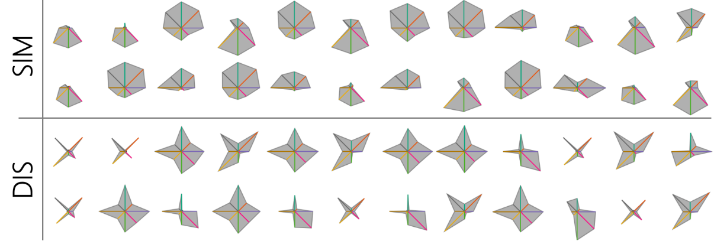

Step 0: What's this page about?
Star Glyphs are a well-researched visualization technique to visualize multi-dimensional data,
often used in small multiple settings for a visual comparison of many data points.
However, the overall visual appearance of Star Glyphs is strongly influenced by the ordering of
dimensions.
An example is shown in the figure below, where the same set of data points are visualized by similarity and dissimilarity ordering.
This tool allows user to upload their own data set and examine different dimension orderings of
Star Glyphs.

For more details, please see paper: Evaluating Ordering Strategies of Star Glyph Axes
Step 1: Choose your data(.csv)
- The first column need to contain ids and will not be visualized.
- All values in the data are considered to be on a ratio scale.
- Computing time increases with larger number of dimensions (depending on the ordering).
Download example and test data:
All columns are
already in range [0,1]. No normalization will be applied.
Step 2: Choose Ordering Methods
*Data sets are displayed according to the original axes order.
Append data table
Store Results as .csv
file